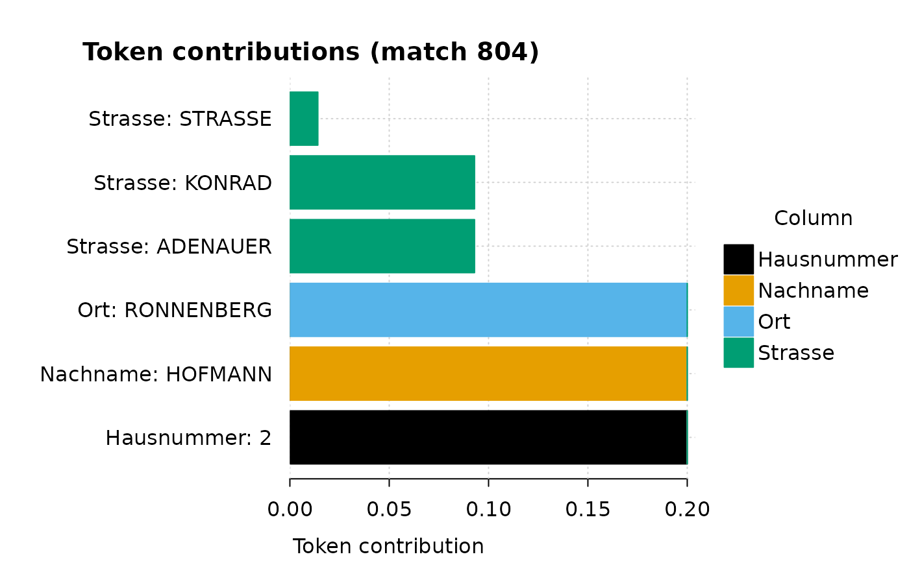

The problem
You have two tables of people. They are the same people, typed by
different hands on different days. One table writes
Prof. Dr. Müller, the other writes Mueller.
One has Bahnhofstraße 67a, the other
Bahnhofstr. 67 A. First names collapse to initials. Middle
names appear and disappear. Districts are spelled the same on both sides
because nobody mistypes where they live.
An exact join finds none of these. Edit distance does a little
better, but it trips on the things that matter: it counts
Müller and Mueller as two edits apart, even
though they are the same name, while rating genuinely different surnames
that sit one letter apart, like Bauer and
Mauer, as near. It has no idea that a rare surname is
strong evidence and a common one is weak. It compares how strings
look, when what you want to compare is the information
two records share.
joinery takes the other route. It cuts each field into tokens, weights each token by how rare it is, and scores a pair by the rare tokens they have in common. This vignette walks the whole path on a pair of built-in tables, and then does something most linkage tutorials cannot: it scores the result against a known answer key.
How joinery thinks about a match
Take one real pair from the data we are about to load: a register row
reading
Amelie Hofmann, Konrad-Adenauer-Straße 2, Ronnenberg and a
listing reading
A. Hofmann, Konrad-Adenauer-Straße 2, Ronnenberg.
-
Tokens. Each field is cut into tokens, with the
spelling smoothed first (lowercased, accents stripped) so that
Amelieandamelieare the same token. The listing’s lone initialA.carries almost no information and will not match the register’s fullamelie. How exactly each field is cut is the strategy you write in a moment. -
Rarity. A token is worth more when it is rare.
Hofmannis a common surname, so sharing it says something but not much.Ronnenbergis a rare place, so sharing it says a lot. This single idea is what separates joinery from edit-distance matching. - Overlap, not appearance. The two records are compared by the rare tokens they share, not by how their strings line up. The missing first name costs nothing, because the score is built from what the records have in common, not from what is absent.
- Score and threshold. Each shared token contributes its share of its column’s weight. The contributions add up to a score between 0 and 1. A pair is kept when the score clears the threshold.
- Entities. Records that link, directly or through a chain of links, form an entity: a duplicate group within one table, or a matched cluster across two.
The pair above scores exactly 0.80, and we will see
later, token by token, exactly where that score came from. That
per-token receipt is explain_match(), and it is the whole
reason to prefer a transparent matcher: you can always ask why a pair
scored what it did.
1. Look at the data
library(joinery)
library(dplyr)
#>
#> Attaching package: 'dplyr'
#> The following objects are masked from 'package:stats':
#>
#> filter, lag
#> The following objects are masked from 'package:base':
#>
#> intersect, setdiff, setequal, union
data(base_example)
data(target_example)
glimpse(base_example)
#> Rows: 3,300
#> Columns: 7
#> $ id_base <chr> "B0001", "B0002", "B0003", "B0004", "B0005", "B0006", "B000…
#> $ Vorname <chr> "Hannah", "Hasan", "Peter", "Sophie", "Sarah", "Amelie", "T…
#> $ Nachname <chr> "Wagner", "Demir", "Becker", "Lehmann", "Schmidt", "Hofmann…
#> $ Strasse <chr> "Am Bahnhof", "Museumstraße", "Turmstraße", "Ringstraße", "…
#> $ Hausnummer <chr> "81", "20", "147", "38", "13", "2", "18", "141", "15", "20"…
#> $ Ort <chr> "Laatzen", "Markkleeberg", "Sindelfingen", "Radebeul", "Köl…
#> $ Kreis <chr> "Region Hannover", "Landkreis Leipzig", "Landkreis Böblinge…joinery works directly with the data frames and tibbles you already
have; there is nothing to convert. We use a few dplyr verbs
below only to slice the results, not to feed joinery.
base_example is 3,300 person records. The last 300 are
deliberate near-duplicates of earlier rows: the same people, re-entered
with initials, added titles, dropped middle names, and house-number
noise. That is the duplicate-detection case.
glimpse(target_example)
#> Rows: 3,000
#> Columns: 8
#> $ actual_link <chr> "B1763", "B2891", "B0743", "B0862", "B0625", "B2108", "B15…
#> $ Vorname <chr> "Mustafa Ali", "Julia", "Daniel", "Marie", "K.", "Jürgen",…
#> $ Nachname <chr> "Özkan", "Schröder", "Hoffmann", "Müllar", "Neumann", "Web…
#> $ Strasse <chr> "Bahnhofstraße", "Wiener Straße", "Birkenweg", "Bahnhofstk…
#> $ Hausnummer <chr> "67m", "79", "58", "73", "28", "70", "31", "1", "18B", "11…
#> $ Ort <chr> "Offenbach", "Neusäß", "Neu-Isenburg", "Herzogenrath", "Bö…
#> $ Kreis <chr> "Stadt Offenbach am Main", "Landkreis Augsburg", "Kreis Of…
#> $ id_target <chr> "T1763", "T2891", "T0743", "T0862", "T0625", "T2108", "T15…target_example is 3,000 records. About 80% are distorted
copies of base_example people; the rest are genuinely new.
The first column, actual_link, is the answer key: for every
copied row it holds the true id_base it came from. That is
unusual for a linkage tutorial and we will lean on it in section 7.
Inspect one known pair. Target row T0006 carries
actual_link = "B0006":
target_example |>
filter(id_target == "T0006") |>
select(id_target, Vorname, Nachname, Strasse, Ort)
#> # A tibble: 1 × 5
#> id_target Vorname Nachname Strasse Ort
#> <chr> <chr> <chr> <chr> <chr>
#> 1 T0006 A. Hofmann Konrad-Adenauer-Straße Ronnenberg
base_example |>
filter(id_base == "B0006") |>
select(id_base, Vorname, Nachname, Strasse, Ort)
#> # A tibble: 1 × 5
#> id_base Vorname Nachname Strasse Ort
#> <chr> <chr> <chr> <chr> <chr>
#> 1 B0006 Amelie Hofmann Konrad-Adenauer-Straße RonnenbergSame person, Amelie shortened to A.. An
exact join on name misses it.
Kreis (the administrative district) is the one field the
noise leaves alone, so it makes a natural blocking key:
only compare records that sit in the same district. That turns a 3,300
by 3,000 comparison into a handful of small ones.
2. Declare a strategy
Think of a strategy as a jig, a woodworker’s template that guides the same cut every time. You set it up once, then run it over every table. It says how to turn each column into tokens, how to block, and where to set the threshold. It runs nothing by itself.
strat <- search_strategy(
Nachname ~ normalize_text() + word_tokens(min_nchar = 3),
Vorname ~ normalize_text() + word_tokens(min_nchar = 3),
Strasse ~ normalize_street(lang = "de") + word_tokens(min_nchar = 3),
Hausnummer ~ numeric_tokens,
Ort ~ normalize_text(),
block_by = "Kreis",
threshold = 0.8
)
strat
#> <joinery::Search_Strategy>
#>
#> columns
#> Nachname: normalize_text() -> word_tokens(min_nchar = 3)
#> Vorname: normalize_text() -> word_tokens(min_nchar = 3)
#> Strasse: normalize_street(lang = "de") -> word_tokens(min_nchar = 3)
#> Hausnummer: numeric_tokens()
#> Ort: normalize_text()
#>
#> blocking: Kreis
#> weights: none
#> rarity: inverse_freq (min=0)
#> fan-out guard: cap at 50,000,000
#> smoothing: none
#> threshold: 0.8
#> max_candidates: none
#> feedback_strength: nonePreparers: how a column becomes tokens
Each formula reads column ~ preparer1 + preparer2 + ...:
a small pipeline, run left to right. The early steps smooth the text;
the last step cuts it into tokens. The four preparers used above:
-
normalize_text()lowercases and strips accents, so casing and diacritics stop mattering. -
normalize_street(lang = "de")expands German street abbreviations (str.becomesstraße) before the text is cut. -
word_tokens(min_nchar = 3)splits text into words and drops anything shorter than three characters, so a lone initial likeA.falls out whileAmeliestays. -
numeric_tokenskeeps only the digit runs. It takes no arguments, so it is written bare, without the().
So Ort ~ normalize_text() smooths the town name but
never splits it, keeping it as one token, while
Nachname ~ normalize_text() + word_tokens(min_nchar = 3)
smooths and splits. joinery ships many more preparers (phonetic
encoders such as as_metaphone(), n-grams, stopword
filters); the reference index lists them all.
The other arguments
The formulas are the only required part. The rest are tuning knobs with sensible defaults:
| Argument | What it does | If you omit it |
|---|---|---|
block_by |
only compare records that share this column’s value | no blocking: every record is compared with every other (fine for small tables, costly for large ones) |
threshold |
the lowest score a pair can have and still be kept | defaults to 0.9
|
weights |
a named vector to make some columns count for more | every column counts equally |
rarity |
how a token’s rarity is measured |
"inverse_freq", where rarer tokens score higher |
max_candidates |
maximum candidate matches kept per record; only the top-scoring N are returned | no limit |
smoothing |
transforms rIP scores before aggregation, redistributing weight across rare and common tokens | identity (no transformation) |
feedback_strength |
penalises a pair when the rare tokens of one record only partially appear in the other |
0 (disabled) |
Here block_by = "Kreis" restricts every comparison to
within a district, and threshold = 0.8 loosens the default
slightly. The three bottom rows in the table appear in the strategy
print-out but are rarely needed: max_candidates,
smoothing, and feedback_strength all default
to “none” and can be left alone for most linkage tasks. There are
further levers for large runs (min_rarity,
max_token_df, and a fan-out guard); their defaults are
safe, and ?search_strategy documents them. This strategy is
the one block of new syntax in the package; the rest are verbs that
consume it.
3. Will it work? (check before you match)
You do not have to run a match to find out whether a strategy is sound. Start by inspecting one column’s tokens:
head(inspect_tokens(base_example, "id_base", strat, Vorname), 8)
#> # A tibble: 8 × 3
#> token Vorname n
#> <chr> <chr> <int>
#> 1 HANNAH Hannah 71
#> 2 HASAN Hasan 15
#> 3 PETER Peter 132
#> 4 SOPHIE Sophie 128
#> 5 SARAH Sarah 59
#> 6 AMELIE Amelie 61
#> 7 THOMAS Thomas 78
#> 8 LUKAS Lukas 56Then ask for a pre-match health check:
audit_strategy(base_example, "id_base", strat)
#>
#> ── Strategy_Audit ──────────────────────────────────────────────────────────────
#> n_records: 3300
#> column token stats
#> Hausnummer: 3300 tokens, 217 unique (6.6%), na_rate=0.0%
#> Nachname: 3300 tokens, 50 unique (1.5%), na_rate=0.0%
#> Ort: 3300 tokens, 63 unique (1.9%), na_rate=0.0%
#> Strasse: 4134 tokens, 88 unique (2.1%), na_rate=0.0%
#> Vorname: 3229 tokens, 65 unique (2.0%), na_rate=0.0%
#> column rarity quantiles
#> Hausnummer: p50=0.5000, pct_low_rarity=0.0%
#> Nachname: p50=0.2500, pct_low_rarity=0.0%
#> Ort: p50=0.0200, pct_low_rarity=0.0%
#> Strasse: p50=0.3333, pct_low_rarity=0.0%
#> Vorname: p50=0.3333, pct_low_rarity=0.0%
#> blocks: 36 blocks, top1_share="16.3%"
#> est_comparisons: "309017"audit_strategy() reports, per column, how many distinct
tokens there are and how rare they run, plus the block layout and an
estimate of how many comparisons the match will cost. Here the blocking
cuts the work to about 309,000 comparisons instead of the ten million a
full cross would need. If a column were all boilerplate (no rare tokens)
or a block were so large it would make the comparison count
unmanageable, this is where you would see it, before paying for the
match.
When no blocking key is available, max_candidates offers
a softer control: setting it to, say, 3 keeps only the
three highest-scoring candidates per record, capping the output without
changing which pairs are evaluated. It does not reduce computation the
way blocking does, but it prevents a large result table when the
threshold alone is too loose.
If a single hyper-common token (a frequent house number, say) were
fanning a block out, rarity_distribution() would show it
and let you set the min_rarity or max_token_df
levers. We do not need it here.
4. Deduplicate the base table
Deduplication is just matching a table against itself with the same strategy.
dups <- detect_duplicates(base_example, id = "id_base", strategy = strat)
dups |>
select(duplicate_group, id, score, rank) |>
head()
#> # A tibble: 6 × 4
#> duplicate_group id score rank
#> <int> <chr> <dbl> <int>
#> 1 7 B0007 0.8 1
#> 2 7 B3066 0.8 2
#> 3 18 B0018 0.8 1
#> 4 18 B3149 0.8 2
#> 5 22 B0022 0.8 1
#> 6 22 B3187 0.8 2deduplicate_table() collapses each duplicate group to a
single record:
base_clean <- deduplicate_table(base_example, dups, id = "id_base")
nrow(base_example) - nrow(base_clean)
#> [1] 282We planted exactly 300 duplicates (the last 300 rows), and the dedup
recovers 282 of them. The rest are the 18 where the noise was heavy
enough to drop the pair below 0.8, which is exactly the
precision/recall trade-off we look at next.
5. Search across tables
Now link the cleaned base table to the target table:
matches <- search_candidates(
base_clean,
target_example,
base_id = "id_base",
target_id = "id_target",
strategy = strat
)
matches |>
select(match_id, score, source, id, Nachname, rank) |>
head()
#> # A tibble: 6 × 6
#> match_id score source id Nachname rank
#> <int> <dbl> <chr> <chr> <chr> <int>
#> 1 1 1 base B0003 Becker 1
#> 2 1 1 target T0003 Becker 2
#> 3 2 1 base B0005 Schmidt 1
#> 4 2 1 target T0005 Schmidt 2
#> 5 3 1 base B0010 Wagner 1
#> 6 3 1 target T0010 Wagner 2Each match_id groups the two sides of one candidate
pair: a base row and a target row. The
score is the shared-rarity total; rank orders
competing candidates for the same record.
6. Did it work, and why this pair?
Every match raises two questions: whether the result held together, and why a given pair scored what it did.
summarise_matches(matches, threshold = 0.8)
#>
#> ── Match_Overview (candidates) ─────────────────────────────────────────────────
#> n_pairs_or_groups: "1803" n_records_involved: "3605"
#> coverage: base=NA target=NA
#> score summary
#> min: 0.800
#> q1: 0.800
#> median: 0.800
#> mean: 0.888
#> q3: 1.000
#> max: 1.000
#> candidates-per-record (top 5)
#> 1 candidate(s): 1801 record(s)
#> 2 candidate(s): 1 record(s)
#> ! median top-1 vs top-2 score gap is 0.000; matches are weakly decisive, consider raising threshold or `feedback_strength`.
#> ! 55.8% of pairs score within an epsilon of the decision threshold; consider `calibrate_matches()` to fit a post-retrieval false-positive filter.The overview shows the score distribution and flags how many pairs
sit close to the threshold. For why this pair, ask for the
receipt. Take the Amelie/A. Hofmann pair from
the start: find its match_id, then explain it.
mid <- matches |> filter(id == "T0006") |> pull(match_id) |> first()
receipt <- explain_match(
matches, strat,
base = base_clean,
id = "id_base",
target = target_example,
target_id = "id_target",
match_id = mid
)
receipt
#> <joinery::Match_Explanation> match 804
#>
#> Records:
#> lhs id=B0006 source=base id_base=B0006 Vorname=Amelie Nachname=Hofmann
#> Strasse=Konrad-Adenauer-Straße Hausnummer=2 Ort=Ronnenberg Kreis=Region
#> Hannover actual_link=NA id_target=NA
#> rhs id=T0006 source=target id_base=NA Vorname=A. Nachname=Hofmann
#> Strasse=Konrad-Adenauer-Straße Hausnummer=2 Ort=Ronnenberg Kreis=Region
#> Hannover actual_link=B0006 id_target=T0006
#>
#> Score: 0.8000
#>
#> Per-column contributions:
#> Hausnummer 0.2000 (1 shared token)
#> Nachname 0.2000 (1 shared token)
#> Ort 0.2000 (1 shared token)
#> Strasse 0.2000 (3 shared tokens)
#>
#> Shared tokens (showing 6 of 6):
#> Hausnummer / 2 rarity=0.2500 rIP=1.0000 weight=0.2000 contrib=0.2000
#> Nachname / HOFMANN rarity=0.1250 rIP=1.0000 weight=0.2000 contrib=0.2000
#> Ort / RONNENBERG rarity=0.0114 rIP=1.0000 weight=0.2000 contrib=0.2000
#> Strasse / KONRAD rarity=0.0667 rIP=0.4648 weight=0.2000 contrib=0.0930
#> Strasse / ADENAUER rarity=0.0667 rIP=0.4648 weight=0.2000 contrib=0.0930
#> Strasse / STRASSE rarity=0.0101 rIP=0.0704 weight=0.2000 contrib=0.0141This is the pair introduced in section 1. It scores exactly
0.80. The first name contributed nothing: the initial
A. was shorter than the min_nchar = 3 cutoff
and fell out of the token set. Nachname, Strasse, Hausnummer, and Ort
each contributed 0.2, because the weights are equal and
each of those columns returned at least one shared token.
The per-token receipt shows where the score came from and where it did not. Plotting it at token resolution makes the variation visible even when column totals are uniform:
token_contribution_plot(receipt)
Within Strasse, konrad and adenauer each
contribute most of that column’s 0.2 share, while strasse
(a word that appears on nearly every street) earns almost no rarity
weight and contributes little despite being shared. Nothing about the
score is hidden: every token shows its rarity, its rIP, and its
contribution.
7. Score against the answer key
Because target_example$actual_link is ground truth, we
can measure the match instead of trusting it. For each candidate pair,
compare the base id we picked to the true link:
pred <- matches |>
group_by(match_id) |>
summarise(
base_id = id[source == "base"][1],
truth = actual_link[source == "target"][1],
.groups = "drop"
) |>
mutate(correct = base_id == truth)
recoverable <- sum(target_example$actual_link %in% base_example$id_base)
c(
pairs = nrow(pred),
precision = round(mean(pred$correct, na.rm = TRUE), 3),
recall = round(sum(pred$correct, na.rm = TRUE) / recoverable, 3)
)
#> pairs precision recall
#> 1803.000 1.000 0.751At threshold = 0.8 the matches are all correct
(precision 1.0) and recover three quarters of the
recoverable links (recall 0.75). The threshold is the dial
between those two. The code below sweeps it across four values:
sweep <- bind_rows(lapply(c(0.6, 0.7, 0.8, 0.9), function(th) {
st <- strat
st@threshold <- th
m <- search_candidates(base_clean, target_example,
base_id = "id_base", target_id = "id_target",
strategy = st)
p <- m |>
group_by(match_id) |>
summarise(base_id = id[source == "base"][1],
truth = actual_link[source == "target"][1],
.groups = "drop") |>
mutate(correct = base_id == truth)
tibble(
threshold = th,
pairs = nrow(p),
precision = round(mean(p$correct, na.rm = TRUE), 3),
recall = round(sum(p$correct, na.rm = TRUE) / recoverable, 3)
)
}))
sweep
#> # A tibble: 4 × 4
#> threshold pairs precision recall
#> <dbl> <int> <dbl> <dbl>
#> 1 0.6 2484 0.942 0.95
#> 2 0.7 1814 1 0.755
#> 3 0.8 1803 1 0.751
#> 4 0.9 792 1 0.33Dropping to 0.6 lifts recall from 0.75 to
0.95, at the cost of a few false links (precision
0.94). Raising to 0.9 keeps precision perfect
but throws away two thirds of the true matches. There is no single right
answer; the right threshold depends on whether a missed link or a wrong
link costs you more. When you need to do better than a single dial, a
trained false-positive filter (calibrate_matches()) learns
the boundary from labelled pairs.
8. Multistage matching
One pass rarely catches everything. The records a match did not touch are its residual:
unmatched_base <- extract_unmatched(base_clean, "id_base", matches)
unmatched_target <- extract_unmatched(target_example, "id_target", matches)
nrow(unmatched_base)
#> [1] 1216
nrow(unmatched_target)
#> [1] 1197multi_stage_search() handles these residuals
automatically; you do not need to extract and pass them yourself. The
calls below show how.
Exact matching as a first gate
The standard approach is to layer passes: a cheap exact stage first, then a tolerant fuzzy stage only on what is left. The layering logic is that the exact stage clears the easy cases (pairs where one record’s token set is fully contained in the other’s) before the heavier scoring starts on the harder residual.
An exact_strategy() matches pairs where one record’s
token set for each column is fully contained in the other’s. The score
is always 1.0; there is no rarity weighting and no
threshold to tune. It is fast and produces zero false positives, so it
is a reliable first gate. It takes the same column formulas as a
search_strategy(), but weights, min_rarity,
and thresholds are ignored: the match criterion is binary
containment.
Composing stages
multi_stage_search() composes the stages in one call: it
runs the exact strategy, extracts the residual, runs the fuzzy strategy
on what is left, and merges the results into a single entity ledger.
staged <- multi_stage_search(
base_clean, target_example,
base_id = "id_base",
target_id = "id_target",
strategies = list(
exact = exact_strategy(
Nachname ~ normalize_text() + word_tokens(min_nchar = 3),
Vorname ~ normalize_text() + word_tokens(min_nchar = 3),
Ort ~ normalize_text(),
block_by = "Kreis"
),
fuzzy = strat
)
)
table(staged$stage)
#>
#> exact fuzzy
#> 2227 1486The stage labels come from the names given in the
strategies list — here "exact" and
"fuzzy" — showing how many records each pass placed. Each
row in the result ties a record to the entity it landed in and is tagged
with the stage that placed it. Records claimed by the exact stage never
enter the fuzzy stage, so the fuzzy scorer works on a smaller and harder
problem. You can add as many stages as needed, each with a progressively
looser strategy operating on the residual of the previous, and the
ledger tracks which stage placed each record.
For deduplicating a single table the same way, use
multi_stage_dedup(); it runs the same staged logic and
resolves connected components at the end.
9. Where to look next
You now have the spine: declare a strategy, check it, dedup, search, score, stage. Four articles take it further, each framed around one problem:
-
Beyond
the basics: fuzzy and exact strategies walks the advanced joins
(containment, region-free movers, phonetic encoders, the fan-out guard)
on the
workshop_register/workshop_listingstables, where each feature has a planted case that measurably wins when you switch it on. - Matching across years and sources pools a multi-year panel and follows each workshop through time with a staged self-search.
-
Calibrating
a false-positive filter trains a model on labelled pairs
(
sample_matches(),export_for_labelling(),fit_filter(),calibrate_matches()) for when one threshold is not enough. - Embedding-based matching matches on meaning instead of spelling, for records that share no tokens at all.
And two more pointers for planning and scale:
plan_strategy() helps choose a blocking key on a dataset
you do not know yet, and the same verbs run on a DuckDB connection when
the data is too large for memory.